Glándulas sin conductos que hablan a todo el cuerpo a la vez, un centro de mando escondido en la base del cráneo y tres enfermedades que el optómetra ve antes que nadie
Los cuatro llegan por un problema de los ojos, y en los cuatro el problema empieza en una glándula que no está en el ojo. Responde con lo que ya sabes, sin buscar. Al final de la clase volvemos sobre ellos.
Una mujer de 35 años dice que sus amigas la ven «con cara de susto». Los ojos se le ven más grandes y más hacia fuera que en las fotos de hace dos años. Además está nerviosa, ha bajado de peso y le sudan las manos. ¿Qué tiene que ver todo eso con el cuello?
Un hombre de 45 años se golpea el hombro con los marcos de las puertas, de un lado y del otro. Ve bien de frente y lee sin problema. ¿Qué parte de su campo visual perdió, y qué hay en la base del cráneo que pueda explicarlo?
Un hombre de 52 años pide gafas nuevas porque ve borroso de lejos. Le mides la refracción y tiene una miopía que no tenía. Una semana después vuelve: la miopía cambió otra vez. Le acaban de diagnosticar diabetes. ¿Le formulas?
Una joven usa desde hace meses unas gotas «que le quitan la alergia de una vez». Las gotas tienen un corticoide. ¿Qué dos cosas del ojo tienes que vigilar, y por qué el nombre del medicamento te lleva a una glándula que está encima del riñón?
Ya conoces glándulas con conductos: la lagrimal vierte la lágrima en el fórnix; las salivales, la saliva en la boca. Son exocrinas: su producto sale a una superficie por un tubo. Una glándula endocrina no tiene tubo. Vierte su producto, la hormona, al líquido intersticial que la rodea, y desde ahí pasa a la sangre, que la lleva a todo el cuerpo.
Si no hay conducto, la sangre es el conducto. Por eso las glándulas endocrinas están entre los órganos más irrigados del cuerpo, y sus capilares son fenestrados, con poros en la pared, como los que vimos en los procesos ciliares. La hormona tiene que poder salir de la célula y entrar al capilar sin obstáculos.
La hormona viaja a todas partes, pero solo actúa sobre las células que tienen un receptor para ella: las células diana. La hormona tiroidea tiene receptores en casi todas las células; la hormona antidiurética, solo en unas pocas del riñón y de los vasos. El mensaje llega a todos, pero solo lo «oye» quien tiene el receptor.
El cuerpo tiene dos sistemas de control. Ya estudiaste uno, el nervioso. Compáralos:
| Sistema nervioso | Sistema endocrino | |
|---|---|---|
| Mensajero | Neurotransmisor, liberado en una sinapsis | Hormona, liberada a la sangre |
| A quién llega | A la célula con la que hace sinapsis | A todas las células con receptor, en cualquier parte |
| Velocidad | Milisegundos | Segundos, horas o días |
| Duración del efecto | Breve | Prolongada |
| Ejemplo ocular | El reflejo pupilar a la luz | El crecimiento del globo ocular en la infancia |
No son dos mundos aparte. Hay fibras nerviosas que terminan soltando su mensaje a la sangre —ocurre en la médula suprarrenal—, y la hipófisis está colgada del cerebro y recibe órdenes de neuronas. Los dos sistemas forman un solo aparato de control, el neuroendocrino.
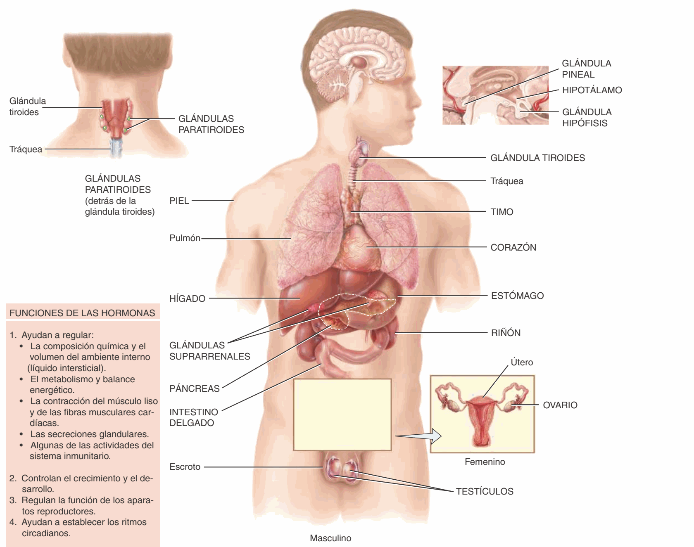
Una hormona que se secretara sin freno sería un problema. Casi todas se regulan como un termostato: cuando el efecto ya se logró, el propio producto apaga la orden que lo produjo. Eso es la retroalimentación negativa.
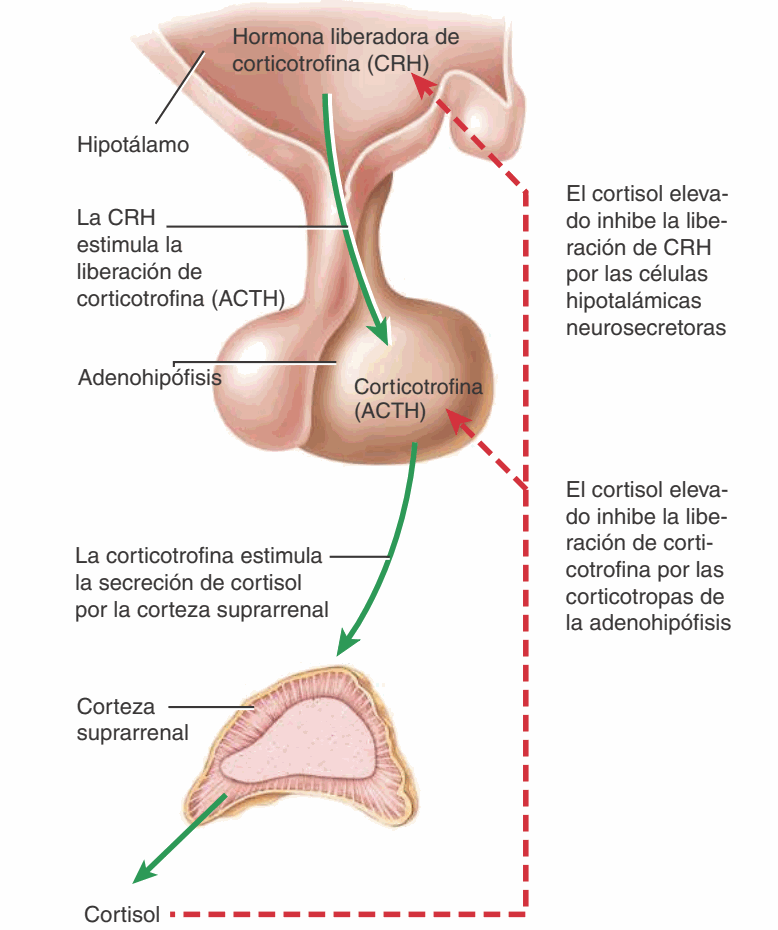
El mismo esquema se repite con la tiroides: TRH → TSH → hormonas tiroideas. Una hormona trófica es la que estimula a otra glándula; su nombre suele terminar en -tropina o -trofina.
El eje es la herramienta del diagnóstico. Si la hormona final está alta y la trófica está baja, el problema está en la glándula de abajo: trabaja de más por su cuenta y la hipófisis, obediente, se frena. Si las dos están altas, el problema está arriba: la hipófisis manda de más. Con esta sola regla vas a entender la enfermedad de Graves en la estación 06.
La hipófisis es del tamaño de un garbanzo: 1 a 1,5 cm. Cuelga del hipotálamo por un tallo, el infundíbulo, y descansa en la fosa hipofisaria de la silla turca del esfenoides, un hueso que conoces bien porque forma buena parte del fondo de la órbita. Tiene dos lóbulos que, aunque estén pegados, son dos órganos distintos.
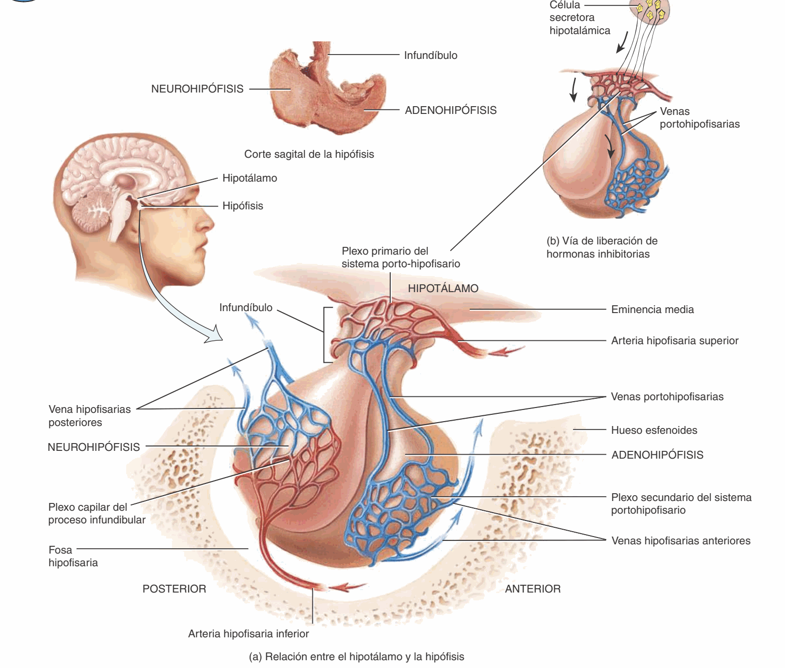
Es tejido epitelial, el 75 % de la glándula. Fabrica sus propias hormonas. El hipotálamo le da órdenes con hormonas liberadoras e inhibidoras que viajan por el sistema porta hipofisario. Un sistema porta es una vena que une dos redes de capilares, sin pasar por el corazón; así la orden llega concentrada y en segundos.
Es tejido nervioso. No fabrica nada: es un almacén. Allí terminan los axones de neuronas cuyo cuerpo está en el hipotálamo, en los núcleos supraóptico y paraventricular. Esas neuronas fabrican la oxitocina y la hormona antidiurética, las bajan por el axón y las sueltan a la sangre en la neurohipófisis.
| Hormona | Lóbulo | Qué hace |
|---|---|---|
| Hormona del crecimiento (GH) | Anterior | Crecimiento de huesos y tejidos; su exceso en el adulto produce acromegalia |
| Tirotropina (TSH) | Anterior | Estimula a la tiroides |
| Corticotropina (ACTH) | Anterior | Estimula a la corteza suprarrenal |
| Folitropina (FSH) y lutropina (LH) | Anterior | Estimulan a ovarios y testículos |
| Prolactina (PRL) | Anterior | Producción de leche |
| Melanotropina (MSH) | Anterior | Escasa en el adulto; pigmentación |
| Oxitocina | Posterior (la fabrica el hipotálamo) | Contracción del útero en el parto y eyección de la leche |
| Hormona antidiurética (ADH) | Posterior (la fabrica el hipotálamo) | Hace que el riñón ahorre agua |
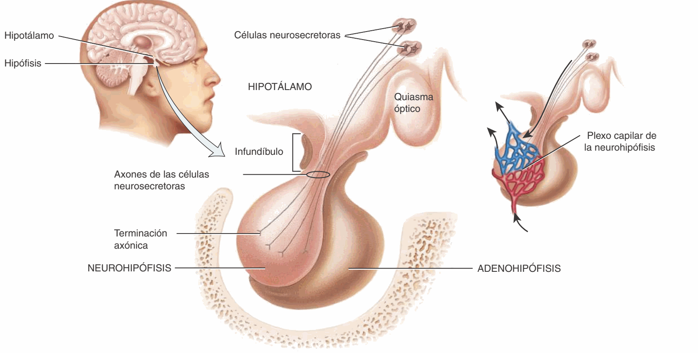
De todas las glándulas del cuerpo, la hipófisis es la que tiene los vecinos más delicados. Ubícala en la silla turca y mira qué tiene en cada dirección:
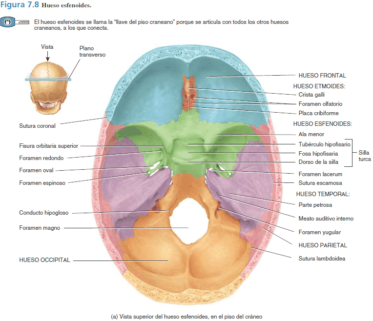
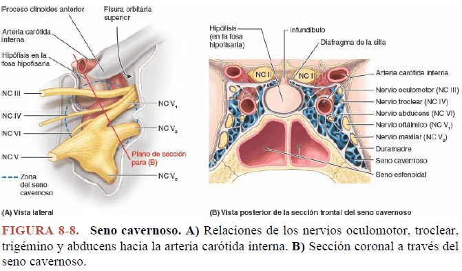
| Dirección | Qué hay | Qué pasa si la hipófisis crece hacia ahí |
|---|---|---|
| Arriba | El diafragma de la silla y, encima, el quiasma óptico | Pérdida de campo visual: hemianopsia bitemporal |
| A los lados | Los senos cavernosos, con el III, IV, V1, V2 y VI y la carótida interna | Visión doble, párpado caído, adormecimiento de la frente |
| Abajo | El seno esfenoidal, una cavidad con aire | Por ahí entra el neurocirujano: la cirugía transesfenoidal, a través de la nariz |
| Atrás | El dorso de la silla y el tronco del encéfalo | Raro que llegue tan lejos |
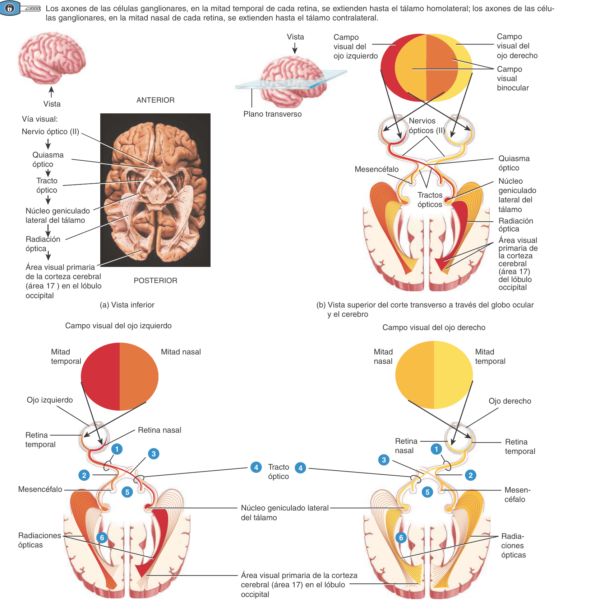
Un tumor de la hipófisis que crece hacia arriba aprieta el quiasma por debajo y por el centro, justo donde se cruzan las fibras. Esas fibras vienen de la retina nasal, y la retina nasal ve el campo temporal. Por eso el paciente pierde las dos mitades de fuera: no ve los marcos de las puertas a ningún lado.
Hay un detalle más fino. Las fibras que se cruzan más abajo en el quiasma vienen de la retina inferior, que ve el campo superior. Como el tumor llega desde abajo, lo primero que se pierde suelen ser los cuadrantes temporales superiores. Un tumor que baja desde arriba, como el craneofaringioma, empieza al revés: por los temporales inferiores.
Un adenoma de la hipófisis crece despacio y casi no duele. La agudeza visual central se conserva hasta muy tarde, porque las fibras de la mácula ocupan todo el quiasma. Muchos pacientes llegan a la consulta de optometría por «chocar con las cosas» o por un accidente de tránsito al cambiar de carril. Un campo visual que respeta la línea media vertical es neurológico hasta que se demuestre lo contrario, y se remite. A veces el tumor sangra de golpe dentro de la silla —la apoplejía hipofisaria—: dolor de cabeza brutal, pérdida visual rápida y ojo paralizado. Es una urgencia.
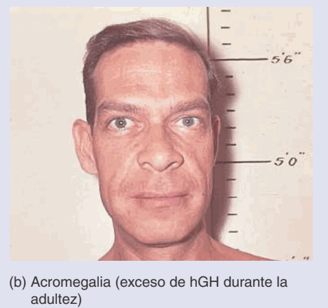
Tiene forma de mariposa y está en la parte anterior del cuello, debajo de la laringe. Dos lóbulos laterales, uno a cada lado de la tráquea, unidos por un istmo que pasa por delante de ella. En la mitad de las personas hay un tercer lóbulo pequeño, el piramidal, que sube desde el istmo. Pesa unos 30 g y, como todas las glándulas endocrinas, está muy irrigada.
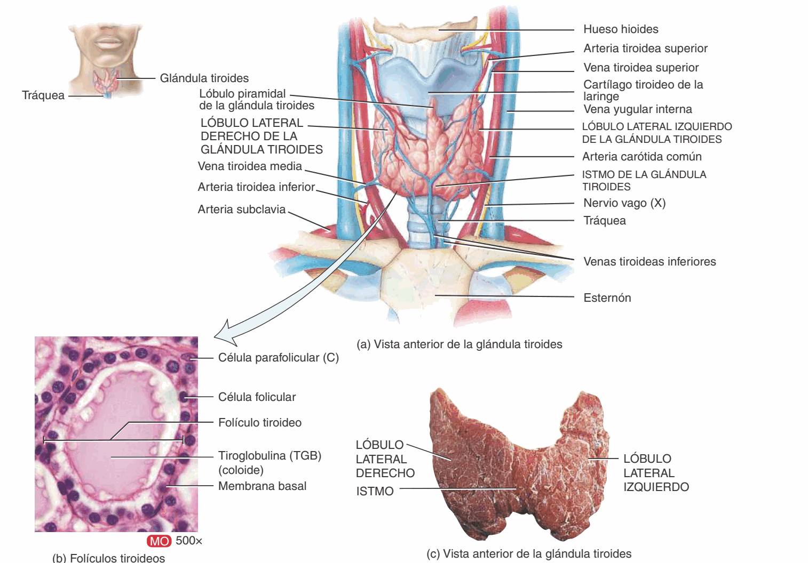
Tapizan los folículos. Fabrican las hormonas tiroideas: la tiroxina (T4) y la triyodotironina (T3), que llevan yodo. Las guardan en el coloide y las sueltan cuando la TSH lo ordena. Aceleran el metabolismo de casi todas las células del cuerpo: son el acelerador general.
Están entre los folículos, no dentro de ellos. Fabrican la calcitonina, que baja el calcio de la sangre. En el adulto su papel es pequeño; lo importante es saber que existen y que no dependen de la TSH.
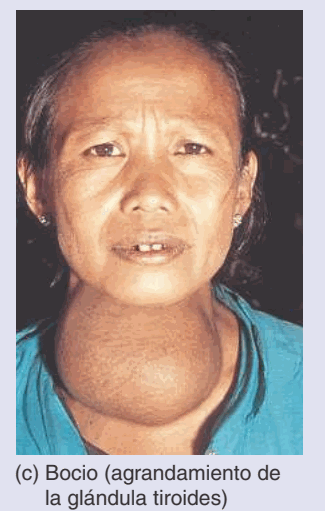
Son cuatro en general, dos a cada lado, del tamaño de una lenteja (unos 40 mg cada una). Están pegadas a la cara posterior de los lóbulos de la tiroides, a veces metidas dentro de su cápsula.
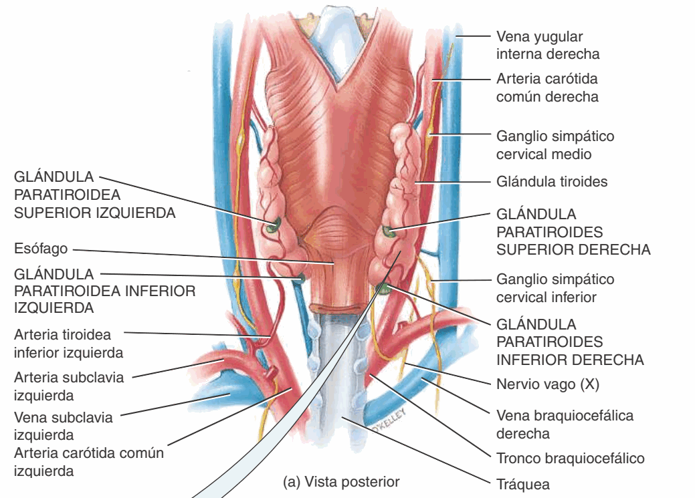
Sus células principales fabrican la hormona paratiroidea (PTH), que sube el calcio de la sangre: lo saca del hueso, lo ahorra en el riñón y activa la vitamina D. Es la contraria de la calcitonina, y mucho más importante que ella.
Una relación anatómica que vale una complicación. Como las paratiroides están pegadas a la tiroides, en una tiroidectomía se pueden quitar o dejar sin sangre sin querer. Sin PTH, el calcio baja y los nervios y músculos se vuelven hiperexcitables: hormigueo alrededor de la boca, calambres, espasmos. El cirujano las busca una por una para respetarlas.
La enfermedad de Graves es la causa más frecuente de hipertiroidismo. Es autoinmune: el cuerpo fabrica un anticuerpo que imita a la TSH y se pega a su receptor en la tiroides. La glándula recibe una orden que nadie apaga, crece y fabrica hormona de más. Afecta de 7 a 10 veces más a mujeres que a hombres, casi siempre antes de los 40.
Aplica la regla de la estación 02. Las hormonas tiroideas están altas. La hipófisis las detecta y frena su TSH: la TSH queda baja. Pero la glándula no se detiene, porque quien la estimula no es la TSH sino el anticuerpo, y el anticuerpo no obedece a ningún freno.
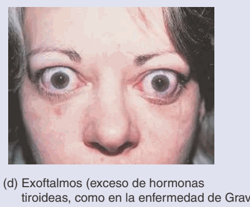
Los fibroblastos de la órbita también tienen el receptor de la TSH. El anticuerpo los activa, y la órbita se inflama: los músculos extraoculares se engruesan —sobre todo el recto inferior y el recto medial— y aumenta la grasa orbitaria.
La órbita es una caja de hueso con una sola pared blanda: la de delante. Si el contenido crece, lo único que puede moverse es el globo, hacia fuera. Eso es el exoftalmos o proptosis.
Como la causa es el anticuerpo y no la hormona, la enfermedad ocular puede aparecer aunque la tiroides ya esté controlada, e incluso en personas con la hormona normal.
El párpado superior queda más alto de lo normal y deja ver esclera encima del iris. Al mirar hacia abajo, el párpado se queda atrás. Es el signo más frecuente, y a veces el primero.
Los músculos engrosados se vuelven rígidos y no se estiran. Un recto inferior rígido no deja subir el ojo: el paciente ve doble al mirar hacia arriba.
Con el globo hacia fuera y el párpado retraído, la córnea queda descubierta. Ardor, sensación de arena, lagrimeo. Es la queja más común.
En el fondo de la órbita, en el vértice, los cuatro rectos se juntan en el anillo tendinoso común alrededor del nervio óptico. Si los músculos engrosados aprietan el nervio en ese embudo, aparece una neuropatía óptica compresiva: baja la visión, los colores se ven lavados y el campo se altera, aunque la córnea y la retina estén sanas. Puede pasar con un exoftalmos pequeño, porque la compresión es atrás, no adelante. Ante un paciente con Graves que refiere que los colores «se apagan», se remite el mismo día.
Son dos, una sobre el polo superior de cada riñón, en el retroperitoneo. Cada una pesa entre 3,5 y 5 g. En realidad son dos glándulas en una, con origen, tejido y hormonas distintos: una corteza por fuera (80 a 90 % del órgano) y una médula en el centro.
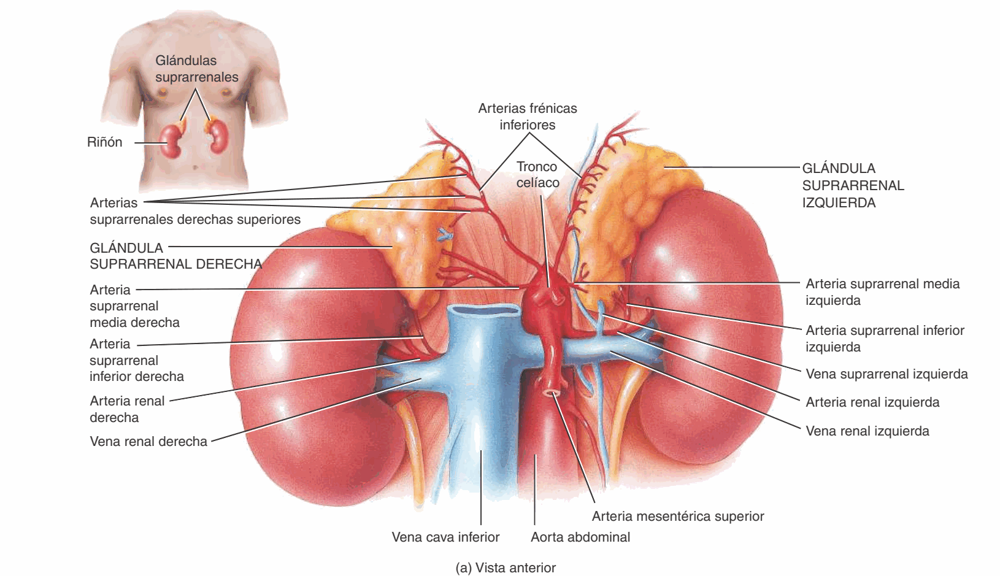
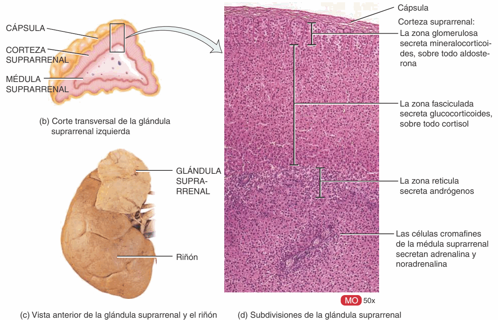
Fabrica hormonas esteroideas, y son indispensables para vivir: sin ellas, la persona muere en días. Tiene tres zonas, y una regla mnemotécnica las ordena de fuera hacia dentro:
| Zona | Hormona principal | Para qué | Regla |
|---|---|---|---|
| Glomerulosa (la externa) | Aldosterona (mineralocorticoide) | El riñón retiene sodio y agua | Sal |
| Fasciculada (la media y más ancha) | Cortisol (glucocorticoide) | Sube la glucosa; frena la inflamación y la respuesta inmune | Azúcar |
| Reticular (la interna) | Andrógenos débiles | Vello, impulso sexual | Sexo |
La médula suprarrenal recibe directamente neuronas simpáticas preganglionares, sin ganglio en medio. Sus células cromafines ocupan el lugar de las neuronas posganglionares, pero en vez de axón tienen la sangre: sueltan adrenalina (80 %) y noradrenalina (20 %) a la circulación. Es la parte hormonal de la respuesta de «lucha o huida». Esas catecolaminas dilatan la pupila, igual que el simpático que ya estudiaste.
El cortisol frena la inflamación, y por eso los corticoides —sus versiones de farmacia— están en cremas, inhaladores, pastillas y gotas oftálmicas. Usados por mucho tiempo, en el ojo producen dos cosas que el optómetra debe buscar:
Por eso en la historia clínica se pregunta siempre por corticoides, en cualquier presentación y no solo en gotas.
El páncreas mide entre 12,5 y 15 cm y está detrás del estómago, con la cabeza metida en la curva del duodeno, un cuerpo y una cola que llega al bazo. Es exocrino y endocrino a la vez: el 99 % de sus células forma los ácinos, que fabrican enzimas digestivas y las mandan al duodeno por un conducto. Entre los ácinos hay entre 1 y 2 millones de pequeños grupos de células endocrinas, sin conducto: los islotes pancreáticos o de Langerhans.
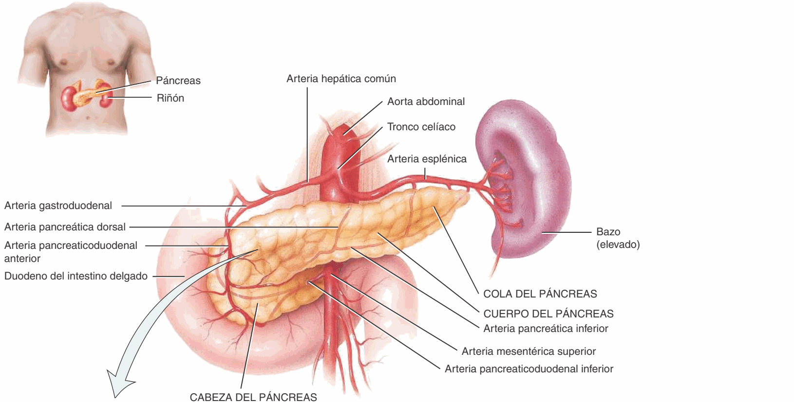
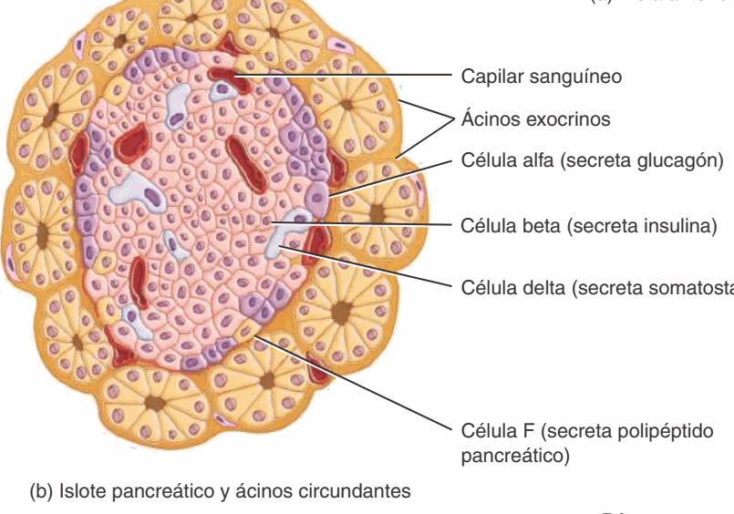
| Célula | Del islote | Secreta |
|---|---|---|
| Beta | ≈ 70 % | Insulina: baja la glucosa |
| Alfa | ≈ 17 % | Glucagón: sube la glucosa |
| Delta | ≈ 7 % | Somatostatina: frena a las otras dos |
| F | El resto | Polipéptido pancreático |
La insulina es la única hormona que baja la glucosa de la sangre: abre la puerta para que la glucosa entre a las células del músculo y del tejido adiposo. Cuando falta, o cuando las células dejan de responderle, la glucosa se acumula en la sangre: eso es la diabetes mellitus. En el tipo 1, el propio cuerpo destruye las células beta y no hay insulina; en el tipo 2, mucho más frecuente, hay insulina pero las células la «oyen» mal.
La glucosa alta durante años daña la pared de los vasos pequeños de todo el cuerpo. Los de la retina son los únicos que se pueden ver directamente, sin cirugía: el fondo de ojo es una ventana a la diabetes. La diabetes toca el ojo de cuatro maneras.
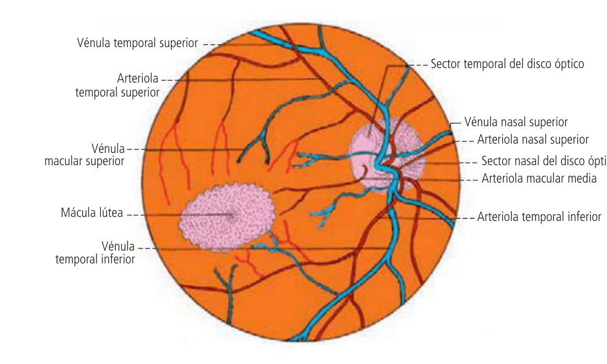
Los capilares de la retina pierden las células que los sostienen y su pared se debilita. Los signos aparecen en un orden:
Si el líquido se acumula en la mácula —el edema macular—, baja la visión central en cualquier fase.
Con la glucosa alta, el cristalino absorbe agua, se hincha y enfoca más fuerte: aparece una miopía que sube y baja con la glucemia. No se formulan gafas hasta que la glucosa se estabilice: la fórmula de hoy no servirá la semana que viene.
Los diabéticos desarrollan catarata más joven y más rápido que el resto de la población.
Un diabético puede amanecer con ptosis y el ojo desviado hacia abajo y afuera: una parálisis del III par por isquemia del nervio. La pupila suele quedar normal. Abajo, por qué.
Las fibras parasimpáticas que contraen la pupila viajan por fuera del III par, en la superficie del nervio, y se nutren de los vasos de la piamadre que lo rodean. La diabetes tapa los vasos pequeños que irrigan el centro del nervio: se dañan las fibras motoras del centro y se respetan las pupilares de la periferia. Un aneurisma hace lo contrario: aprieta el nervio desde fuera y la primera en caer es la pupila. Por eso un III par con la pupila dilatada es una urgencia, y uno con la pupila normal en un diabético suele ser isquémico y mejora solo en semanas.
Todo diabético necesita un fondo de ojo dilatado al menos una vez al año, aunque vea bien. La retinopatía no duele y la visión puede ser normal hasta fases avanzadas. Encontrarla a tiempo es, muchas veces, trabajo del optómetra.
Es pequeña (0,1 a 0,2 g), tiene forma de piña y está en la línea media, pegada al techo del tercer ventrículo, entre los dos colículos superiores. Forma parte del epitálamo. Secreta melatonina: mucha de noche, poca de día. Así ayuda a regular el sueño y los ritmos de 24 horas.
¿Cómo sabe la pineal si es de día? Por la retina. Un grupo pequeño de células ganglionares de la retina detecta la luz pero no forma imágenes: manda su señal al núcleo supraquiasmático del hipotálamo, que está —como dice su nombre— encima del quiasma. De ahí la señal baja por la médula y sube por el simpático cervical hasta la pineal:
El ganglio cervical superior es el mismo por el que pasa la vía simpática que dilata la pupila. Por eso una persona sin ninguna percepción de luz puede tener alterado el ciclo del sueño: le falta el estímulo que pone en hora su reloj.
Está en el mediastino, detrás del esternón. Además de ser un órgano linfoide primario, secreta hormonas —las timosinas— que ayudan a madurar a los linfocitos T. Es grande en el niño y se reemplaza por grasa con la edad.
Además de producir óvulos y espermatozoides, secretan hormonas sexuales: los ovarios, estrógenos y progesterona; los testículos, testosterona. Las controlan la FSH y la LH de la adenohipófisis, con el mismo esquema de retroalimentación negativa.
El corazón (péptido natriurético auricular, que hace perder sodio), el riñón (eritropoyetina, que estimula la producción de glóbulos rojos), el estómago y el intestino, el tejido adiposo (leptina, que da saciedad), la piel (la vitamina D empieza ahí con el sol) y la placenta. La lista muestra que «endocrino» describe una función, no un tipo de órgano.
Toca la tarjeta para ver la definición. El nombre en latín es el de la Terminologia Anatomica; es el que aparece en los atlas y en los informes.
Glándula sin conducto que vierte su secreción, la hormona, a la sangre.
👁 La lagrimal es su contrario: exocrina.
Glándula de 1 a 1,5 cm alojada en la fosa hipofisaria, unida al hipotálamo.
👁 Debajo del quiasma óptico.
Lóbulo anterior, epitelial; fabrica GH, TSH, ACTH, FSH, LH, prolactina y MSH.
👁 De aquí nacen casi todos los adenomas.
Lóbulo posterior, nervioso; almacena la oxitocina y la ADH que fabrica el hipotálamo.
👁 Un almacén, no una fábrica.
Tallo que une el hipotálamo con la hipófisis.
👁 Pasa justo detrás del quiasma.
Depresión del cuerpo del esfenoides; su fondo es la fosa hipofisaria.
👁 El esfenoides también forma el fondo de la órbita.
Lámina de duramadre que cubre la silla turca; la atraviesa el infundíbulo.
👁 Lo único que separa la hipófisis del quiasma.
Venas que unen los capilares del hipotálamo con los de la adenohipófisis.
👁 Llevan las órdenes del hipotálamo.
Dos lóbulos laterales y un istmo, debajo de la laringe; unos 30 g.
👁 Su enfermedad autoinmune llega a la órbita.
Puente de tejido tiroideo que une los dos lóbulos por delante de la tráquea.
👁 De él sube a veces el lóbulo piramidal.
Tercer lóbulo inconstante que sube desde el istmo; lo tiene la mitad de las personas.
👁 Variante normal, no un nódulo.
Cuatro glándulas pequeñas en la cara posterior de la tiroides; secretan PTH.
👁 La PTH sube el calcio.
Glándula sobre el polo superior del riñón, con corteza y médula.
👁 Su cortisol es el modelo de los corticoides.
Zonas glomerulosa, fasciculada y reticular; hormonas esteroideas.
👁 Sal, azúcar y sexo, de fuera hacia dentro.
Centro de la glándula; células cromafines que liberan adrenalina y noradrenalina.
👁 Un ganglio simpático convertido en glándula.
Grupos de células endocrinas entre los ácinos del páncreas: alfa, beta, delta y F.
👁 Sin insulina de las beta, diabetes.
Glándula del epitálamo, en el techo del tercer ventrículo; secreta melatonina.
👁 La pone en hora la luz que entra por la retina.
Núcleo del hipotálamo, encima del quiasma: el reloj de 24 horas.
👁 Recibe fibras de la retina que no sirven para ver.
Haz clic en tu respuesta. La retroalimentación explica por qué es correcta y qué es en realidad cada una de las otras. Responde primero sin mirar arriba: lo que cuenta es recuperar, no reconocer.
1. ¿Qué rasgo distingue a una glándula endocrina de una exocrina?
2. El cortisol en sangre sube por encima de lo normal. ¿Qué le ocurre a la ACTH de la hipófisis?
3. ¿Dónde se aloja la hipófisis?
4. ¿Cuál es la diferencia fundamental entre los dos lóbulos de la hipófisis?
5. Un hombre de 45 años tiene un adenoma de la hipófisis que crece hacia arriba y empieza a apretar el quiasma óptico por debajo. Todavía no pierde la mitad completa de ningún campo. ¿Qué parte del campo visual es la primera en alterarse?
6. Un tumor de la hipófisis crece hacia un lado e invade el seno cavernoso. ¿Qué síntoma es esperable por esa invasión?
7. ¿Qué células fabrican la calcitonina?
8. Al día siguiente de una tiroidectomía total, un paciente siente hormigueo alrededor de la boca y calambres en las manos. ¿Qué explica el cuadro?
9. En la enfermedad de Graves la tiroides trabaja de más. ¿Por qué la TSH en sangre está baja?
10. ¿Qué empuja el globo ocular hacia delante en el exoftalmos de Graves?
11. A patient with Graves' orbitopathy reports that colours look washed out, although the cornea and retina are healthy. What is the most likely cause?
12. ¿Qué zona de la corteza suprarrenal fabrica el cortisol?
13. ¿Por qué se dice que la médula suprarrenal es un ganglio simpático modificado?
14. Una paciente usa desde hace meses gotas con un corticoide por una alergia ocular. ¿Qué dos efectos debe vigilar el optómetra?
15. ¿Qué células del islote pancreático secretan insulina?
16. Un hombre con diabetes recién diagnosticada y la glucosa todavía alta consulta por visión borrosa de lejos que cambia de un día a otro. ¿Cuál es la conducta correcta?
17. ¿Cuál es el primer signo visible de la retinopatía diabética en el fondo de ojo?
18. Un hombre diabético de 62 años amanece con el párpado derecho caído y el ojo derecho desviado hacia abajo y afuera. La pupila derecha tiene el mismo tamaño que la izquierda y reacciona bien a la luz. ¿Cuál es la explicación más probable?
19. La luz que entra por la retina frena la secreción de melatonina. ¿Por qué camino llega esa información a la glándula pineal?
Los mismos del principio. Intenta responder antes de abrir cada uno.
Tiene enfermedad de Graves. Un anticuerpo imita a la TSH: la tiroides, en el cuello, fabrica hormona de más, y de ahí los nervios, el peso que baja y el sudor. El mismo anticuerpo activa los fibroblastos de la órbita: engrosan los músculos extraoculares y la grasa, y el globo, que solo puede moverse hacia delante, sale. Lo que hay que vigilar es el vértice: si los colores se apagan, el nervio óptico está comprimido y se remite ese mismo día.
Perdió los dos campos temporales: una hemianopsia bitemporal. Es lo que hace un tumor de la hipófisis que sale de la silla turca y aprieta el quiasma desde abajo, justo donde se cruzan las fibras de la retina nasal. La agudeza central se conserva, por eso lee bien. El campo visual descubre el tumor, y se remite.
No le formulas todavía. Con la glucosa alta, su cristalino absorbe agua, se hincha y lo vuelve miope, y la miopía cambia con cada cambio de la glucemia. Se le explica, se espera a que la glucosa se estabilice y, como es un diabético nuevo, se le hace un fondo de ojo dilatado para buscar microaneurismas.
Hay que vigilar la presión intraocular y el cristalino, buscando una catarata subcapsular posterior. El corticoide es la versión de farmacia del cortisol, que fabrica la zona fasciculada de la corteza suprarrenal, encima del riñón. Comparte con él la capacidad de frenar la inflamación, y también sus efectos sobre el ojo.
El sistema endocrino entra en el examen final con el resto del tercer corte. La próxima clase es el sistema respiratorio, el jueves 29 de octubre; allí vuelve a aparecer el ganglio cervical superior, a propósito del síndrome de Horner.